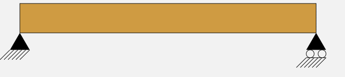
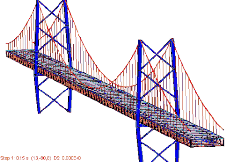
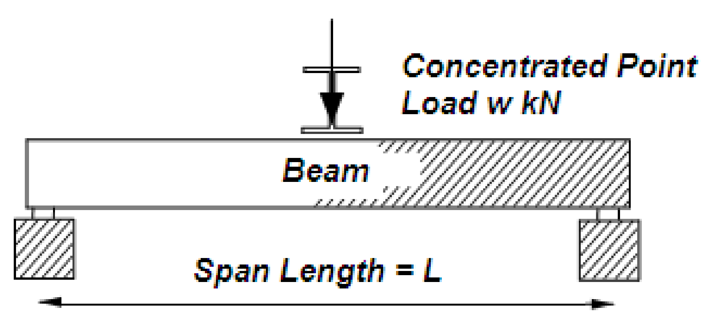
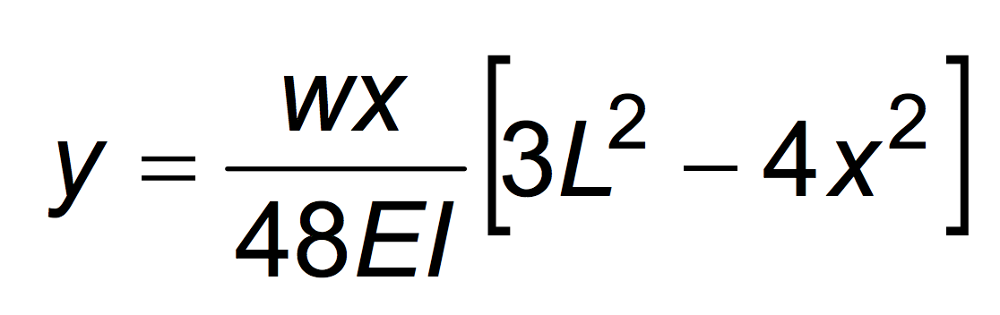

Designing stong, structurally-sound, and cost-effective bridges is a common task in the field of civil engineering. There are many factors to take into account that may affect the final design, including but not limited to:
In this programming assignment you will write a program that prints out a bridge of a specified size, and performs deflection calculations at various points of the bridge. If you don’t know what deflection is or how to calculate it, don’t worry! Deflection will be explained and you’ll be given a formula to use for the calculation. So, what is deflection?
Deflection is essentially the bend or curve that various materials can have when forces are applied to them. As a simple example of this, imagine a wooden board suspended between two supports (say, a brick at each end). If you were to jump onto the middle of the board, the board would probably bend (deflect), kind of like what is shown in the animation below:

You can think of this as a really simple bridge. The amount that a bridge (or piece of wood) will deflect between two supports can vary depending on the material the bridge is made out of, the size of the material, and the shape of the material.
If the piece of wood suspended between the two bricks was thin (say, a 2” by 2” piece of lumber) then the wood would probably deflect a lot. It might even break! If you had a larger peice (say 4” by 4”) then it would deflect less. The amount of deflection also depends on the distance between the supports, and where you stand. If the distance between the two bricks is 10 feet and you stand in the middle, it will deflect more than if there was only 5 feet between the two supports. Beleive it or not, road bridges actually can deflect (to some degree) when you drive your car over them. Below is a (perhaps dramatized) animation showing bridge movement (including deflection) as cars drive over it.

In this assignment, you’ll be doing some deflection calculations for a level, continous bridge that has zero or more supports between the two ends. A continuous-span bridge is much like the grey one pictured above. The bridge spans a distance, and there are supports spaced along the span. The amount of deflection depends on how close the weight is to a support, among other things.
To compute the deflection at a given point on a simple span, you should use the below equation:
 
This formula can also be written out in python-like syntax as so:
You will have two shor PAs and one regular PA to work on, related to the topics of bridges and deflection. The two short PAs directly relate to the long PA, so work on those first, and then you can re-use the code from those to work on the regular PA! The links to each of these are provided below.